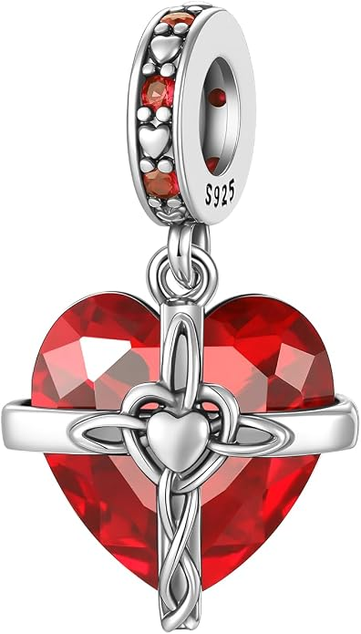

Charm de mes de plata 925 con corazones
Charm de mes con detalles de corazones para representar tu mes de nacimiento o una fecha especial en tu pulsera.
Desde 15,21 €
Ver en Amazon#publicidad
Pequeños detalles, grandes historias.
Descubre charms de los 12 meses del año en plata de ley 925 para personalizar tu pulsera con un significado especial. Encuentra el charm de tu mes de nacimiento y diseños relacionados con piedras de nacimiento, cumpleaños, fechas especiales o regalos personalizados.
Charm de mes con detalles de corazones para representar tu mes de nacimiento o una fecha especial en tu pulsera.
Desde 15,21 €
Ver en Amazon#publicidad

Diseño de mes combinado con el símbolo del infinito, ideal para representar un recuerdo o momento especial.
Desde 16,54 €
Ver en Amazon#publicidad

Charm de mes decorado con el símbolo del infinito y circonitas para añadir un detalle brillante a tu pulsera.
Desde 16,93 €
Ver en Amazon#publicidad

Diseño de mes con corazón para personalizar una pulsera y representar una fecha o momento importante.
Desde 15,62 €
Ver en Amazon#publicidad

Charm de mes con acabado en tono oro rosado para quienes buscan una alternativa diferente para su pulsera.
Desde 24,99 €
Ver en Amazon#publicidad

Charm de mes decorado con circonitas para aportar brillo y un detalle especial a tu pulsera.
Desde 10,54 €
Ver en Amazon#publicidad

Diseño de mes integrado en un corazón completo para crear una pulsera con un significado personal.
Desde 24,39 €
Ver en Amazon#publicidad

Charm de mes con corazón y piedra decorativa, pensado para representar una fecha o persona especial.
Desde 21,89 €
Ver en Amazon#publicidad

Diseño de mes con forma de anillo para añadir un elemento diferente y personal a tu pulsera.
Desde 22,01 €
Ver en Amazon#publicidad

Charm de mes con diseño de corazón estilo llavero para personalizar una pulsera de forma original.
Desde 23,90 €
Ver en Amazon#publicidad

Diseño de mes con corazón de estilo Luxury para añadir un acabado más sofisticado a tu pulsera.
Desde 39,69 €
Ver en Amazon#publicidad

Charm de mes redondo de estilo Luxury para representar un mes especial con un diseño elegante.
Desde 34,23 €
Ver en Amazon#publicidad

Charm de mes con un diseño de corazón elegante, ideal para representar un mes especial y personalizar tu pulsera.
Desde 14,99 €
Ver en Amazon#publicidad

Charm de mes con diseño redondo y elegante, ideal para representar un mes especial y personalizar tu pulsera.
Desde 24,99 €
Ver en Amazon#publicidad

Charm de enero con un corazón rojo de piedra de nacimiento, una cruz decorativa en el centro y pequeños detalles en tonos plateados y azules. El color rojo representa el granate, la piedra de nacimiento tradicional del mes de enero.
Desde 14,58 €
Ver en Amazon#publicidad
Los charms de meses son una forma especial de representar una fecha o un momento importante en una pulsera. Puedes elegir el mes de nacimiento de una persona, el mes en el que ocurrió algo especial o simplemente tu mes favorito.
Los charms de meses para pulseras están disponibles en diferentes diseños de plata de ley 925, con opciones decoradas con corazones, circonitas, piedras y diferentes acabados para que puedas encontrar el estilo que mejor encaje con tu pulsera.
El charm del mes de nacimiento es una forma sencilla de crear una pieza personalizada. Puedes escoger tu propio mes o el de una persona especial y utilizarlo como recuerdo dentro de una pulsera.
Este tipo de charm también puede combinarse con una inicial, un número o algún otro diseño relacionado con la persona. Por ejemplo, puedes juntar el mes de nacimiento con la primera letra de su nombre para crear un detalle más personal.
También puedes buscar un charm de piedra natal o un diseño relacionado con la piedra de nacimiento del mes que quieras representar. La disponibilidad de estos diseños puede variar según el producto.
Puedes encontrar diseños relacionados con los doce meses del año: enero, febrero, marzo, abril, mayo, junio, julio, agosto, septiembre, octubre, noviembre y diciembre.
Esto permite elegir un charm relacionado con cualquier mes, tanto para representar un nacimiento como para recordar una fecha, una celebración o un momento importante.
La disponibilidad de cada mes puede variar según el modelo. Antes de comprar, comprueba en Amazon las opciones y variantes disponibles dentro del diseño que hayas elegido.
Un charm de mes puede ser una opción de regalo para un cumpleaños, un aniversario, una fecha especial o simplemente como recuerdo de un momento importante. El significado puede adaptarse a cada persona y a la historia que quieras representar.
Si quieres crear un regalo más completo, puedes combinar el mes con una inicial, un número o un charm relacionado con los gustos de la persona que lo recibe.
También puedes combinar un mes de nacimiento con otros elementos personalizados para crear una pulsera que reúna diferentes recuerdos de una persona.
Lo primero es decidir qué mes quieres representar y comprobar que esté disponible en el diseño elegido. Después puedes fijarte en el estilo del charm y en los detalles decorativos que mejor combinen con tu pulsera.
Los modelos sencillos pueden encajar fácilmente con otras piezas, mientras que los diseños con corazones, circonitas, piedras o acabados especiales pueden convertirse en uno de los elementos protagonistas.
Todos nuestros charms de meses son de plata de ley 925. La plata 925 contiene un 92,5 % de plata y es un material muy utilizado en joyería.
Si quieres conocer mejor sus características y aprender a cuidar tus piezas, puedes consultar nuestra guía sobre la plata de ley 925 y cómo cuidar tus charms .
Los charms de meses pueden utilizarse para personalizar una pulsera y también pueden formar parte de un collar, siempre que el sistema de enganche sea adecuado para la cadena utilizada.
Nuestros charms son compatibles con marcas principales, pulseras de dijes estándar y pulseras de abalorios de 3 mm. Antes de comprar, comprueba siempre las características y medidas indicadas para cada producto.
Un charm de mes puede combinarse con otros elementos para crear una pulsera que represente diferentes partes de una historia. Puedes añadir una inicial, un número, un animal o un charm de amor relacionado con la persona o el momento que quieres recordar.
También puedes descubrir nuestra selección de charms de letras e iniciales, charms de números y charms de horóscopo y signos del zodiaco para crear una combinación personalizada.
Si buscas otros estilos, también puedes explorar charms de animales, charms de amuletos y símbolos, charms de personajes, charms de ocasiones y hobbies y charms fluorescentes.
Es un charm que representa el mes en el que nació una persona. Puede utilizarse como detalle personal en una pulsera y combinarse con otros charms para crear una composición personalizada.
Los diseños de esta categoría pueden representar los doce meses del año. La disponibilidad concreta de cada mes puede variar según el modelo y sus variantes.
Es un diseño relacionado con la piedra de nacimiento asociada tradicionalmente a un determinado mes. La disponibilidad y el diseño de la piedra pueden variar según el producto.
Sí. Es una opción de regalo personalizada para cumpleaños, aniversarios u otras ocasiones especiales. Puedes elegir el mes de nacimiento de la persona que recibirá el regalo.
Sí. Combinar un mes con una inicial permite representar tanto una fecha o mes importante como a la persona relacionada con él.
Sí. Todos nuestros charms de meses son de plata de ley 925.
Están pensados para utilizarse con marcas principales, pulseras de dijes estándar y pulseras de abalorios de 3 mm. Aun así, es recomendable comprobar las características y medidas de cada producto antes de comprarlo.
Sí. Los charms de meses también pueden utilizarse en collares cuando el tamaño y el sistema de enganche son adecuados para la cadena.
Sí. Puedes combinarlo con iniciales, números, animales, símbolos, diseños relacionados con el amor, horóscopo y otros charms para crear una pulsera personalizada.
Sí. Los precios, la disponibilidad y las variantes pueden cambiar. Antes de realizar una compra, comprueba siempre la información actualizada del producto en Amazon.